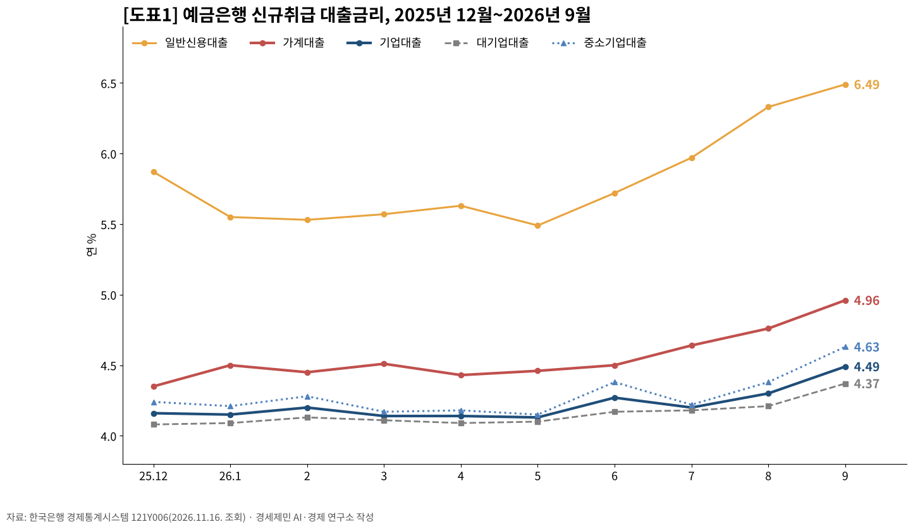
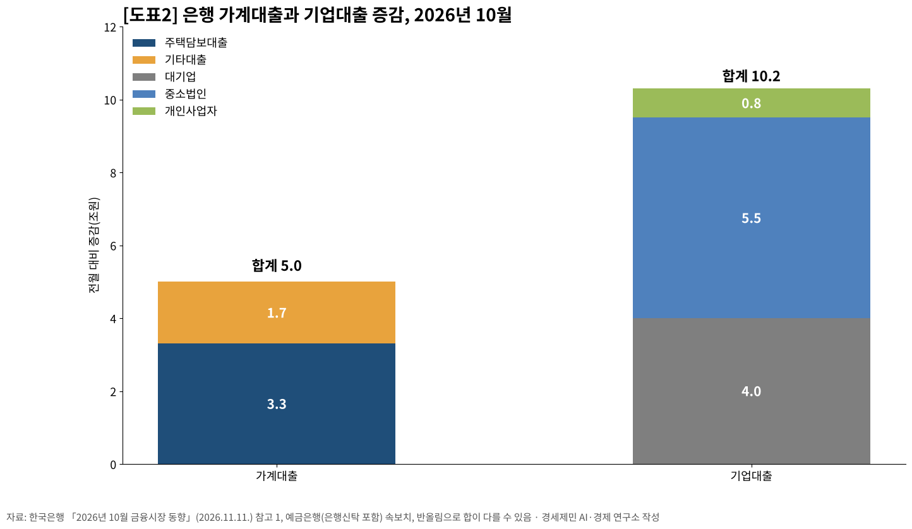
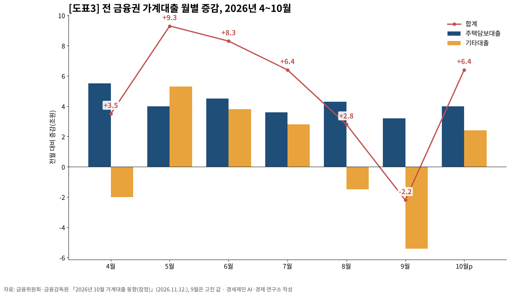
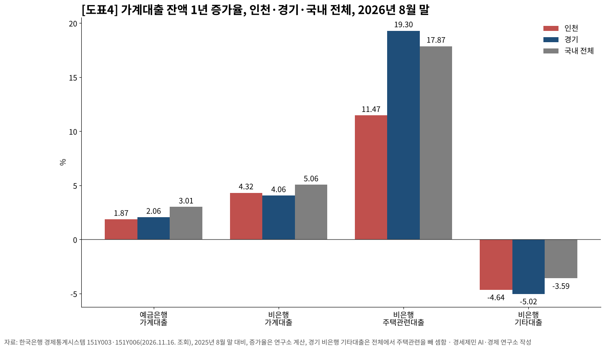
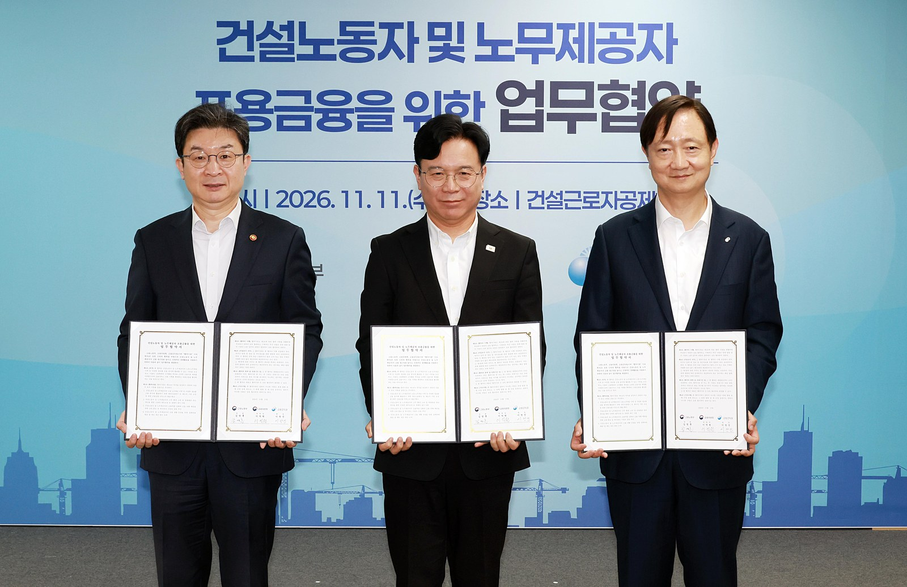
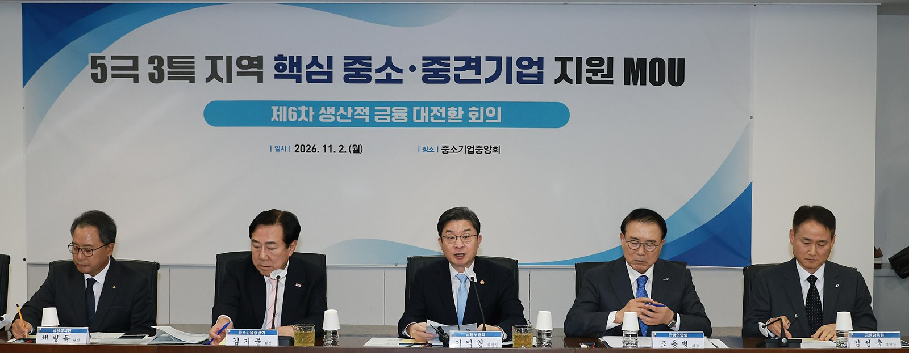

[가계부채 브리핑②] 금리 인상기 가계·기업 대출금리 격차와 회사채 대신 늘어난 대기업 은행 대출
3~5월 대비 7~9월 대출금리 상승 가계 0.32%포인트, 대기업 0.15%포인트
1~10월 은행 대기업 대출 45조 7,000억원, 회사채 순상환 22조 3,000억원
10개월 만에 2025년 연간 넘은 가계대출, 초과분은 제2금융권 몫
인천 비은행 주택관련대출 증가율 11.47%, 국내 전체 17.87%
요약
AI경제저널=김갑봉 기자 | 예금은행 신규취급 대출금리는 3~5월 평균보다 7~9월 평균이 가계 0.32%포인트, 중소기업 0.24%포인트, 대기업 0.15%포인트 높다. 2026년 1월이나 2025년 12월을 기준으로 해도 가계, 중소기업, 대기업 차례로 많이 올랐다(연구소 계산). 한국은행은 가계대출 관리 강화와 기업대출 확대 정책이 맞물려 가계대출 금리가 더 올랐다고 분석했다.
2026년 1~10월 은행 대기업 대출은 45조 7,000억원 늘어 2024년 30조 8,000억원, 2025년 19조 9,000억원보다 많다. 같은 기간 공모 회사채는 22조 3,000억원 순상환됐고, 일반기업 기업어음·단기사채는 17조원 순발행됐다. 한국은행은 10월 대기업 대출 증가의 원인으로 은행의 대출영업 강화와 회사채 상환 자금 수요를 들었다.
은행 개인사업자 대출은 1~10월 4조 1,000억원, 연초 대비 0.9% 늘었다. 중소법인은 6.2%, 대기업은 15.5% 늘었다(연구소 계산).
1~10월 가계대출 누적 42조 4,000억원은 10개월 만에 2025년 연간 38조원을 넘었고, 초과분은 제2금융권 몫이다. 2026년 8월 말 인천 비은행 주택관련대출은 1년 새 11.47% 늘어 국내 전체 17.87%, 경기 19.30%보다 느렸다.
가계금융복지조사 기준으로 금융부채를 가진 소득 1분위 가구의 47.5%는 금리가 오르면 순이자부담이 늘어나는 차주다. 한국은행의 과거 평균 추정을 7·8월 인상에 대입하면 가계 취약차주 연체율 반응은 2027년 상반기 전후에 가장 커질 가능성이 있다(연구소 판단). 보고서에 신뢰구간이 실리지 않은 과거 평균 반응이다.
제언은 다섯이다. 대출금리 분해와 기업 규모별 신용 배분의 정례 공표, 개인사업자 신용 지원 실적과 가산금리 변동 사유 공개가 첫째와 둘째다. 셋째는 2027년 상반기 취약차주 금리부담 점검, 넷째는 가계대출 동향의 상품·업권·지역별 구분, 다섯째는 인천·경기 생활권 자료 공동 집계다.
1. 배경과 목적
금융위원회·금융감독원·한국은행은 11월 11일 「2026년 10월 가계대출 동향(잠정)」을 배포하고 12일 조간에 공개했다. 10월 전 금융권 가계대출은 6조 4,000억원 늘어, 9월 2조 2,000억원 감소에서 한 달 만에 증가로 돌아섰다.
연구소는 11월 12일 이 동향과 9월 가계대출 금리, 장단기 시장금리의 엇갈림, 인천 가계대출 잔액을 분석해 냈다. 그 분석에서 9월 가계대출 금리는 기업대출보다 0.47%포인트 높았다. 이 브리핑은 그 격차를 기업 규모별로 나누고, 남은 물음 셋을 다룬다.
첫째, 기준금리를 올린 뒤 가계와 중소기업, 대기업의 신규 대출금리는 얼마씩 올랐나. 둘째, 같은 해 은행 신용은 누구에게 얼마나 갔나. 셋째, 1~10월 가계대출 누적 증가는 어느 업권과 지역에서 만들어졌나.
한국은행 기준금리는 7월과 8월 두 차례 올라 연 3.00%다. 10월 22일 금융통화위원회는 이 수준을 유지하고, 추가 인상의 시기와 속도를 물가·경기 흐름과 금융안정 상황을 보며 정하겠다고 밝혔다.
2. 자료와 방법
자료는 여섯이다. 첫째는 금융위원회 「2026년 10월 가계대출 동향(잠정)」 보도자료(11월 12일)와 9월 동향 보도자료(10월 15일)다. 둘째는 한국은행 「2026년 10월 금융시장 동향」(11월 11일)이다. 셋째는 한국은행 경제통계시스템의 예금은행 가중평균금리(신규취급액 기준)와 지역별 가계대출(말잔) 통계다.
넷째는 한국은행 「2026년도 제20차 금융통화위원회(정기) 의사록」(10월 22일 회의)과 그 안의 통화정책방향 의결문이다. 다섯째는 한국은행 「금융안정 상황(2026년 9월)」이다. 여섯째는 금융위원회의 11월 2일 생산적 금융 회의 사진뉴스와 11월 11일 포용금융 업무협약 보도자료다.
결과에는 공표 수치와 연구소 계산, 기관의 원인 설명과 평가를 싣고, 해석에는 연구소 판단과 그 근거가 된 기관 자료를 함께 적었다. 비교 기간은 금리 3~5월 대비 7~9월, 은행 신용 1~10월 누적, 지역 2025년 8월 말 대비 2026년 8월 말이다.
금리는 그달 새로 취급한 대출의 가중평균금리다. 가중평균금리는 대출 상품 구성이 바뀌어도 움직여, 금리 변동을 가산금리와 구성 변화로 가를 수 없다. 6월에는 중소기업대출 금리가 앞뒤 달보다 크게 높아 3~5월 평균과 7~9월 평균을 견줬고, 2026년 1월과 2025년 12월 기준으로도 견줬다.
시장금리는 기준금리 인상 전인 2025년 하반기부터 올라, 3~5월도 인상 기대가 반영된 시기다. 신규 대출금리에서 같은 달 저축성수신 금리를 뺀 값을 이 브리핑에서는 신규취급 예대금리차라 부른다. 저축성수신 금리는 기업대출의 실제 조달원가와 다르다.
은행 가계대출과 기업대출은 한국은행 금융시장 동향의 예금은행(은행신탁 포함) 기준이다. 한국은행은 이 수치가 통화정책용 속보치이며 공식 통계와 포괄 범위가 다르다고 적었다. 기업대출 규모별 증가율은 10월 말 잔액에서 1~10월 누적 증감을 빼 연초 잔액을 셈한 뒤 구했다. 공모 회사채 순발행에는 중소기업 몫이 많은 P-CBO(발행시장 채권담보부증권)가 들고 사모채는 빠지며, 기업어음·단기사채는 일반기업 전체 기준이다.
제2금융권은 금융위원회 집계로 상호금융, 보험, 저축은행, 여신전문금융회사를 합한 값이다. 지역 통계의 비은행금융기관은 한국은행 지역별 통계표의 분류라 제2금융권과 포괄 범위가 다르다. 예년 비교에는 해마다 다른 추석 시점의 영향을 줄이려고 9~10월 두 달 합계도 썼다. 9월 수치는 10월 보도자료의 고친 값을 썼고, 10월 수치는 모두 잠정치다.
지역 통계는 11월 16일 조회 기준 2026년 8월 말이 최신이며, 지역 간 비교에는 같은 통계표 안의 값만 썼다. 한국은행의 연체율 추정은 기준금리 인상 뒤 반응이 가장 커지는 시점의 과거 평균이며, 보고서에 신뢰구간은 실리지 않았다.
3. 결과
가. 대기업보다 더 오른 가계 신규 대출금리
예금은행 신규취급 대출금리는 9월 가계대출 연 4.96%, 대기업대출 연 4.37%, 중소기업대출 연 4.63%다. 앞 분석의 가계·기업 금리 차 0.47%포인트를 규모별로 보면 대기업과는 0.59%포인트, 중소기업과는 0.33%포인트다.
3~5월 평균과 7~9월 평균을 견주면 가계대출 금리는 0.32%포인트, 중소기업대출 금리는 0.24%포인트, 대기업대출 금리는 0.15%포인트 올랐다. 2026년 1월과 9월을 견주면 각각 0.46%포인트, 0.42%포인트, 0.28%포인트다. 2025년 12월과 견주면 0.61%포인트, 0.39%포인트, 0.29%포인트다(연구소 계산).
세 기준 모두 가계, 중소기업, 대기업 차례로 많이 올랐다. 가계와 대기업의 상승 폭 차이는 기준에 따라 0.17~0.32%포인트다. 가계와 중소기업의 차이는 0.04~0.22%포인트로 더 크게 흔들린다(연구소 계산).
같은 평균 비교로 일반신용대출 금리는 0.70%포인트, 주택담보대출 금리는 0.35%포인트, 집단대출 금리는 0.29%포인트 올랐다(연구소 계산). 9월 일반신용대출 금리는 6.49%다.
가계대출과 대기업대출의 금리 차는 2026년 1~6월 0.32~0.41%포인트에서 9월 0.59%포인트가 됐다. 가계대출과 중소기업대출의 차는 1~6월 0.12~0.34%포인트였다가 7월 0.42%포인트로 벌어진 뒤, 9월 0.33%포인트로 1~6월 수준에 돌아왔다.
저축성수신 금리는 3~5월 평균 2.89%에서 7~9월 평균 3.29%로 0.40%포인트 올라, 가계대출과 기업대출 전체의 금리 상승 폭보다 컸다. 같은 수신금리를 빼므로 신규취급 예대금리차의 결론은 대출금리 비교와 같다. 가계대출은 1.58%포인트에서 1.50%포인트로, 대기업대출은 1.21%포인트에서 0.96%포인트로 줄었다(연구소 계산).

나. 한국은행이 든 가산금리와 정책 요인
한국은행은 「금융안정 상황(2026년 9월)」에서 은행 신규취급 수신금리가 2025년 하반기부터 시장금리 상승과 수신 기반 확보 노력으로 올랐다고 분석했다. 여신금리도 지표금리가 높아지며 올랐다. 그 위에 가계대출 관리 강화와 생산적 금융을 내건 기업대출 확대 정책이 맞물려 가계대출 금리가 기업대출 금리보다 크게 올랐다고 밝혔다.
같은 보고서는 서민금융대출 비중 확대와, 7월 시행 개정 은행법에 따른 보증기관 출연금의 가산금리 반영 제한도 대출금리에 영향을 줬다고 덧붙였다. 영향의 방향과 크기는 따로 밝히지 않았다. 2026년 상반기 은행의 기업 대출태도는 대기업 중심으로 완화됐다고 적었다. 생산적 금융 등 기업대출 확대 유인으로 기업의 가산금리 부담이 완화되고 있다고도 적었다.
같은 보고서에서 월중 평균 7~8월 지표금리는 신규취급 코픽스 0.21%포인트, 금융채 6개월물 0.17%포인트 올랐다. 양도성예금증서(CD) 91일물은 0.05%포인트 올랐다. 2025년 8월~2026년 6월에는 각각 0.32%포인트, 0.65%포인트, 0.40%포인트 올랐다. 주택담보대출은 코픽스 등을, 가계신용대출과 기업대출은 금융채·CD 금리 등을 지표로 쓴다.
10월 22일 금융통화위원회 의사록에서 한국은행 관련 부서는 가계대출 금리에 가계부채 관리 등을 위한 가산금리 인상이 더해졌다고 설명했다. 의사록 별첨은 9월 가계대출 금리가 장·단기 지표금리 움직임을 반영해 올랐고, 대기업대출 금리 상승은 일부 은행의 저금리 대출 취급 확대로 제한됐다고 적었다. 관련 부서는 신규취급액 기준 예대금리차가 지난 몇 달 등락하며 아직 크게 확대되지는 않았다고도 답했다.
다. 회사채 대신 늘어난 대기업 은행 대출
10월 은행 기업대출은 10조 2,000억원 늘었다. 대기업 대출이 4조원, 중소기업 대출이 6조 2,000억원 늘었고, 중소기업 대출 가운데 개인사업자는 8,000억원이다. 같은 달 은행 가계대출은 5조원 늘었다.
1~10월 은행 대기업 대출 증가는 2024년 30조 8,000억원, 2025년 19조 9,000억원, 2026년 45조 7,000억원이다. 공모 회사채 순발행은 같은 기간 각각 -4,000억원, 6조 4,000억원, -22조 3,000억원이다.
한국은행은 기업들이 대출 같은 대체 조달 수단을 활용하며 회사채 발행 수요가 줄어 순상환이 이어졌다고 설명했다. 일반기업 기업어음(CP)·단기사채 순발행은 같은 기간 3조원, 7조 2,000억원, 17조원이다. 대기업 은행 대출과 공모 회사채만 더하면 2026년이 세 해 가운데 가장 적고, 기업어음·단기사채까지 넣으면 가장 많다(연구소 계산).
2026년 1~10월 대기업 대출은 연초 잔액 295조원의 15.5% 늘었다. 대출 증가에서 공모 회사채 순상환을 모두 빼 연초 대출 잔액으로 나눈 순조달 증가율은 약 7.9%다. 회사채 순상환을 모두 대기업 몫으로 가정한 값이다.
중소법인 대출은 38조원으로 6.2%, 개인사업자 대출은 4조 1,000억원으로 0.9% 늘었다. 은행 가계대출은 30조 2,000억원으로 2.6% 늘었다(연구소 계산).
개인사업자 대출 1~10월 증가는 2024년 6조원, 2025년 3조 7,000억원이었다. 한국은행은 10월 대기업 대출 증가의 원인으로 은행의 대출영업 강화와 기업의 회사채 상환 자금 수요를 들었다. 10월 중소기업 대출 증가에는 10월 26일 부가가치세 납부 수요가 들었다고 설명했다.
9월 대기업대출 신규취급 금리는 연 4.37%이고, 9월 말 회사채(3년, AA-) 금리는 연 4.68%다. 월평균 신규 대출금리와 월말 채권 수익률이라 그대로 견줄 값은 아니다.
10월 22일 의사록에서 한 위원은 기업신용이 대기업 대출에 몰리고 중소기업과 개인사업자 대출은 부진하다고 지적했다. 시설자금보다 운전자금 위주로 기업대출이 늘고 있다는 점도 짚었다. 관련 부서는 회사채 순상환이 이어지지만 회사채 투자수요가 양호하고, 은행들이 완화적 대출태도를 지키는 점을 들어 기업 자금조달 여건을 평가했다고 답했다.
「금융안정 상황(2026년 9월)」 집계로 금융권 전체 개인사업자 대출 연체율은 2025년 4분기 1.89%에서 2026년 2분기 2.22%로 올랐다. 중소법인은 2.88%에서 3.44%로 올랐다. 금융기관 업무보고서 기준이며, 상호금융과 저축은행은 1일 이상 원금 연체나 1개월 이상 이자 연체를 연체로 셈한다.
같은 보고서에서 자영업자의 개인사업자대출은 2026년 2분기 말 749조 8,000억원으로 2025년 말보다 9조 2,000억원 늘었다. 자영업자가 진 가계대출은 348조 7,000억원으로 3조 6,000억원 줄었다.

라. 예년 수준의 10월 증가와 제2금융권이 만든 누적 초과
10월 전 금융권 가계대출 증가 6조 4,000억원 가운데 은행이 5조원, 제2금융권이 1조 4,000억원이다. 은행 주택담보대출 증가 3조 3,000억원에는 디딤돌·버팀목 1조 2,000억원이 들어 있다. 디딤돌·버팀목 기금 재원은 7월부터 10월까지 달마다 4,000억~5,000억원 줄었다.
10월 증가액은 2023년 6조 2,000억원, 2024년 6조 5,000억원, 2025년 4조 9,000억원이다. 9~10월 두 달 합계는 2023년 8조 6,000억원, 2024년 11조 9,000억원, 2025년 6조 1,000억원이다. 2026년은 4조 2,000억원이다(연구소 계산).
1~10월 누적 증가 42조 4,000억원은 10개월 만에 2025년 12개월 증가액 38조원보다 4조 4,000억원 많다. 제2금융권 1~10월 증가 12조 3,000억원은 2025년 연간 5조 1,000억원보다 7조 2,000억원 많다. 은행은 2025년 연간보다 2조 7,000억원 적다(금융위원회 집계, 연구소 계산).
한국은행 집계로 1~10월끼리 견줘도 은행 가계대출 누적 증가는 2026년 30조 2,000억원으로 가장 적다. 2024년은 44조 5,000억원, 2025년은 32조 7,000억원이다.
제2금융권 1~10월 증가 가운데 상호금융이 9조 7,000억원이고, 그 안에서 농협 5조 5,000억원, 신협 2조 1,000억원, 새마을금고 2조원이다. 보험은 1조 9,000억원 늘었다.
은행 기타대출은 9월 2조 3,000억원 감소에서 10월 1조 7,000억원 증가로 바뀌었다. 한국은행은 9월 분기 말 부실채권 매각·상각과 명절 상여금의 기저효과, 개인의 주식 순매수를 원인으로 들었다. 같은 달 증권사 투자자예탁금은 14조 4,000억원 줄고 은행 정기예금은 24조 1,000억원 늘었다.

마. 국내·경기보다 느린 인천의 비은행 주택관련대출
2026년 8월 말 인천 예금은행 가계대출은 61조 4,648억원, 비은행금융기관 가계대출은 14조 4,915억원이다. 두 값을 더하면 75조 9,563억원이다. 예금은행은 1년 새 1.87%, 비은행은 4.32% 늘었다.
같은 기간 예금은행 증가율은 국내 전체 3.01%, 경기 2.06%다. 비은행은 국내 전체 5.06%, 경기 4.06%다. 인천 예금은행 가계대출 가운데 주택관련대출은 1.85%, 기타대출은 2.02% 늘었다(연구소 계산).
인천 비은행 주택관련대출은 8조 6,120억원으로 1년 새 11.47% 늘었다. 국내 전체 17.87%, 경기 19.30%보다 느리다. 인천의 1년 증가분은 비은행 주택관련대출 8,862억원, 예금은행 주택관련대출 9,710억원이다(연구소 계산).
비은행 주택관련대출은 2026년 5월 말부터 8월 말까지 인천 0.33%, 국내 전체 0.29% 늘어 거의 그대로였다. 같은 석 달 비은행 기타대출은 인천 1.30%, 국내 전체 0.31% 줄었다. 1년 동안 인천 비은행 기타대출은 5조 8,795억원으로 4.64% 줄었다.
예금은행과 비은행을 합한 인천 가계대출은 1년 새 2.33% 늘었다. 경기는 2.48%, 국내 전체는 3.50%다. 인천 가계대출에서 비은행 몫은 19.1%로 국내 전체 24.1%, 경기 21.4%보다 낮다(연구소 계산).
예금은행 기준 8월 인천 가계대출 연체율은 0.30%로 1년 전과 같다. 같은 달 국내 전체는 0.45%로 1년 전과 같고, 경기는 0.37%에서 0.38%로 올랐다. 이 브리핑의 지역 연체율은 예금은행 기준이다.
부천·김포·시흥은 경기에 속해 한국은행 지역별 통계로는 경기 전체만 볼 수 있다. 한국은행은 「금융안정 상황(2026년 9월)」에서 서울 외곽과 경기 일부 지역의 중·저가 주택가격이 높은 오름세를 이어 가고 있다고 적었다.

바. 금리 상승에 순이자부담이 늘어나는 금융부채 보유 소득 1분위 가구 47.5%
「금융안정 상황(2026년 9월)」에서 국내총생산 대비 가계부채 비율은 2026년 1분기 말 85.3%로 2025년 말 88.1%보다 내렸다. 한국은행은 이 비율이 장기평균 84.0%를 웃돌고 선진국 평균보다 상당히 높다고 평가했다. 2분기 말은 성장세와 가계대출 규제 강화 등의 영향으로 대략 81%가 될 것으로 봤다.
같은 보고서는 2026년 2분기 말 가계대출 연체율을 은행 0.40%, 비은행 2.22%, 금융권 전체 0.98%로 집계했다. 다중채무자이면서 저소득이거나 저신용인 취약차주 비중은 차주수 기준 1분기 6.7%에서 2분기 6.8%로 올랐다.
한국은행은 가계의 평균적인 대응여력이 과거 인상기보다 양호하다고 평가했다. 잔액 기준 변동금리대출 비중은 2021년 7월 말 68.4%에서 2026년 6월 말 56.1%로 내렸다. 한국은행은 다만 가계 취약차주의 연체율이 과거 인상기보다 높은 수준이라고 밝혔다.
경제통계시스템으로 보면 예금은행이 새로 내준 가계대출의 변동금리 몫은 2025년 9월 37.9%에서 2026년 9월 76.0%로 커졌다. 변동금리 대출은 지표금리가 바뀌면 이자도 따라 바뀐다.
같은 보고서는 가계 전체로는 이자수지가 플러스이지만 금융부채를 가진 가구만 보면 마이너스라고 적었다. 금융부채 보유 가구의 처분가능소득 대비 이자수지는 2025년 3월 말 -6.3%, 소득 1분위 가구는 -14.0%다.
금리가 오르면 순이자부담이 늘어나는 차주는 2025년 3월 말 가계 28.6%, 금융부채를 가진 소득 1분위 가구 47.5%로 추정됐다(가계금융복지조사). 취약 자영업자는 2026년 2분기 말 41만 1,000명으로 자영업자 차주의 12.8%다. 이들의 대출은 119조 2,000억원으로 반년 새 4조 7,000억원 늘었다.
한국은행은 2007년 1월~2026년 6월 월별 자료로 잔액 기준 대출금리가 기준금리 인상 뒤 약 5개월에 가장 크게 반응한다고 추정했다. 은행 연체율은 가계와 기업 모두 약 15개월 뒤다. 2012년 1분기~2026년 2분기 분기 자료로는 가계 취약차주와 중소기업 대출의 연체율이 약 9개월 전후로 더 이르게 반응한다고 추정했다.
한국은행은 카드사 연체율이 2025년 1분기 말 2.34%까지 오른 까닭으로 두 가지를 들었다. 2022년 이후 금리 상승에 따른 상환여력 저하와, 다른 비은행금융기관의 신용대출 축소로 저신용·저소득 차주가 카드사로 들어온 일이다.
4. 해석
가. 가산금리와 구성 변화가 섞인 가계 대출금리 상승
(연구소 판단) 가계대출 금리는 세 기준 모두 대기업대출보다 더 올랐다. 한국은행이 든 가계대출 관리 강화와 기업대출 확대 정책, 의사록에서 관련 부서가 설명한 가산금리 인상이 이 차이와 맞아떨어진다.
(연구소 판단) 다만 의사록 별첨이 든 일부 은행의 저금리 대기업 대출 확대, 서민금융대출 비중 확대 같은 구성 변화도 섞여 있다. 금리가 높은 대출이 늘면 차주 한 사람의 부담이 그대로여도 평균금리는 오른다. 한국은행은 기업 쪽 가산금리 부담이 완화됐다고 적었지만, 은행별 가산금리와 순이자마진 자료 없이는 가산금리 인상과 구성 변화의 몫까지 가를 수 없다.
(연구소 판단) 지표금리로도 이 차이를 다 가를 수 없다. 7~8월에는 주택담보대출 지표인 코픽스가 금융채보다 0.04%포인트, CD보다 0.16%포인트 더 올랐다. 2025년 8월~2026년 6월에는 금융채가 코픽스보다 0.33%포인트 더 올라 방향이 반대다(연구소 계산). 의사록 별첨은 9월 가계대출 금리에 장·단기 지표금리가 함께 반영됐다고 적었다.
(연구소 판단) 금융채·CD 금리 등 비슷한 지표를 쓰는 일반신용대출은 대기업대출보다 0.55%포인트 더 올랐다. 두 대출의 지표 구성 차이와 함께 가계부채 관리용 가산금리, 구성 변화의 몫이 더해졌을 가능성이 있다.
(연구소 판단) 가계대출 관리 강화는 주택가격 기대와 가계부채 증가를 누르려는 정책이다. 한국은행도 수도권 주택시장 불안을 완화하려는 주택가격 기대심리 관리와 거시건전성정책 강화 기조 유지를 정책당국의 과제로 적었다. 이 정책의 금융안정 효과와 금융부채 가구가 진 금리 부담은 함께 놓고 봐야 한다.
(연구소 판단) 금리 상승의 분배는 한쪽으로만 가지 않는다. 한국은행 집계로 가계 전체 이자수지는 플러스이고 금융부채 가구만 마이너스다. 수신금리 상승은 이자수지가 플러스인 가구에 이롭고, 대출금리 상승은 금융부채 가구, 그 가운데 소득 1분위 가구에 더 무겁다.
나. 회사채 대신 늘어난 대기업 은행 대출과 얇은 개인사업자 신용
(연구소 판단) 2026년 대기업의 은행 대출은 예년보다 크게 늘었고, 장기 회사채는 순상환됐다. 한국은행도 회사채 순상환을 대출 같은 대체 조달 수단 활용으로 설명했다. 같은 기간 일반기업 기업어음·단기사채 순발행도 늘어, 기업 조달은 공모 회사채에서 은행 대출과 기업어음·단기사채 쪽으로 옮겨 갔다.
(연구소 판단) 그 사이 은행 개인사업자 대출은 0.9% 늘었다. 증가액은 2025년보다 조금 많지만 2024년의 3분의 2 수준이다. 중소법인 6.2%, 대기업 15.5%와 견주면 은행 신용의 배분은 개인사업자 쪽에서 가장 얇았다. 수요 감소, 12월까지 진행 중인 2021년 이후 고위험 사업자대출의 전수점검, 부실 정리의 몫은 이 자료로 가를 수 없다.
(연구소 판단) 자영업자의 개인사업자대출은 2025년 말보다 늘었고, 자영업자의 가계대출은 줄었다. 금융권 전체 개인사업자 연체율과 취약 자영업자의 대출은 함께 올랐다. 운전자금 위주의 기업대출 증가가 비용 부담에서 왔다면, 늘어난 대출이 생산 투자로 이어졌다고 보기도 어렵다.
금융위원회는 11월 2일 제6차 생산적 금융 대전환 회의에서 지역 핵심 중소·중견기업 보증부 대출 공급방안과 외상매출채권 담보대출 제도개선 방안을 논의했다. 회의에 앞서 16개 은행과 신용보증기금·기술보증기금, 모두 18개 기관이 지역 핵심 중소·중견기업 지원 업무협약을 맺었다.
(연구소 판단) 보증부 대출은 공적 보증기관이 위험 일부를 지는 방식이다. 대상이 지역 핵심 중소·중견기업이라, 개인사업자 대출 0.9%를 직접 겨냥한 수단은 아니다.
다. 총량 범위 안 평가에 겹친 목표 상향과 집단대출 별도 관리
금융당국은 10월 동향에서 가계대출이 총량 목표 범위 안에서 관리되고 있다고 밝혔다. 9월 동향 보도자료를 보면 총량관리 목표는 연간증가율 1.5%에서 3.0% 수준으로 올랐다. 이주비·중도금·잔금 같은 집단대출은 금융회사별 총량목표와 따로 관리한다.
한국은행은 「금융안정 상황(2026년 9월)」에서 8월 들어 금융기관의 대출취급 규모가 총량한도에 다다르며 가계대출 증가세가 줄었다고 분석했다. 그 일부는 총량목표 상향 뒤 금융기관별 배분에 시간이 걸린 탓으로 봤다. 목표 상향으로 주택관련대출 중심의 증가세가 다시 커질 가능성도 있다고 적었다.
(연구소 판단) 10월 증가는 예년 10월 수준이고, 9~10월 합계는 최근 3년보다 적다. 누적이 10개월 만에 2025년 연간을 넘은 것은 제2금융권 때문이다. 총량 범위 안이라는 평가에는 은행 쪽 관리와 함께 목표 상향, 집단대출 별도 관리가 겹쳐 있다.
(연구소 판단) 10월 은행 디딤돌·버팀목은 1조 2,000억원 늘고 기금 재원은 줄었다. 은행 정책성 대출 증가에는 기금 재원에서 은행 재원으로 바뀐 몫이 섞였을 가능성이 있다.
(연구소 판단) 개인 주식 순매수가 은행 기타대출 증가 1조 7,000억원 가운데 얼마인지는 공표 자료로 가를 수 없다. 10월 의사록에서 한 위원은 가계자금이 주식시장에서 정기예금으로 옮겨 가는 모습이라고 말했다. 주가가 내릴 때는 빚을 내 사는 개인과 시장을 떠나는 자금이 함께 있을 수 있어, 두 설명은 서로 어긋나지 않는다.
라. 비은행 주택대출과 취약차주의 반응 시점
(연구소 판단) 인천의 비은행 주택관련대출 증가율과 비은행 몫은 경기·국내 전체보다 낮다. 인천 예금은행 주택관련대출도 1.85%만 늘어, 1년 주택관련대출 증가분의 비은행 몫은 약 48%다. 국내 전체 약 50%와 비슷하다(연구소 계산).
(연구소 판단) 비은행 주택관련대출의 1년 증가는 대부분 2025년 하반기부터 2026년 5월 사이에 일어났고, 5~8월에는 거의 늘지 않았다. 국내 전체로 보면 그 기간 은행 총량관리 아래 주택대출 수요 일부가 상호금융 등 비은행으로 옮겨 갔을 가능성이 있다.
(연구소 판단) 경기의 비은행 주택관련대출은 1년 새 19.30% 늘어 국내 전체보다 빨랐고, 한국은행은 경기 일부 지역의 중·저가 주택가격 오름세를 짚었다. 부천·김포·시흥 생활권이 이 흐름에 들었는지는 한국은행 지역별 통계로 가를 수 없다.
(연구소 판단) 5월 말부터 8월 말까지 인천 비은행 기타대출이 줄었다. 빚을 갚은 결과인지, 부실채권 매각·상각이나 저신용 차주의 대출 문턱이 높아진 결과인지는 이 통계로 가를 수 없다. 카드사 연체율 상승 때처럼 한 업권의 신용 축소는 저신용 차주를 다른 업권으로 밀어낼 수 있다.
(연구소 판단) 앞의 9개월 추정을 7·8월 인상에 대입하면 가계 취약차주와 중소기업 대출의 연체율 반응은 2027년 상반기 전후에 가장 커질 가능성이 있다. 15개월 추정으로는 은행 연체율 전체가 2027년 하반기 전후다.
(연구소 판단) 지표금리가 2025년 8월부터 올라 반응은 더 이를 수 있다. 과거 인상기와 이번은 인상 폭과 정책 지원이 달라, 8월 28일 정부 지원방안이 반응을 늦추거나 줄일 수도 있다. 소득 1분위 이자수지 -14.0%는 2025년 3월 말 자료라 그 뒤 오른 금리를 담지 못했다.
금융위원회·고용노동부·금융감독원은 11월 11일 건설근로자와 노무제공자의 포용금융 업무협약을 맺었다. 근로·노무제공 이력을 신용평가에 쓰는 기반 마련, 특화 금융상품 개발, 채무조정 지원 등이 내용이다. 근로이력 정보를 쓰는 맞춤형 금융상품은 2027년 중 출시할 예정이다.
(연구소 판단) 금융위원회는 소득이 일정하지 않은 건설근로자와 노무제공자가 신용평가와 대출심사에서 어려움을 겪는다고 적었다. 근로이력의 신용평가 반영은 이들의 대출 접근과 금리 조건을 바꿀 수단이 될 수 있다.

5. 제언
가. 한국은행·금융위원회 — 대출금리 분해와 기업 규모별 신용 배분의 정례 공표
한국은행은 「금융안정 상황(2026년 9월)」에서 가계와 기업 대출금리 변화를 지표금리와 가산금리로 나눠 보였다. 한국은행이 이 분해를 가계, 중소기업, 대기업 대출로 나눠 반기마다 금융안정 보고서에 정례로 싣기를 제안한다.
금융위원회에는 생산적 금융으로 늘린 기업대출을 대기업, 중소법인, 개인사업자로 나눠 분기마다 공표하기를 제안한다. 금융감독원에는 은행 업무보고서의 대출 용도에 회사채 상환 자금 항목을 더해, 대기업 대출 가운데 그 몫을 따로 집계하기를 제안한다. 11월 2일 회의에서 논의한 중소·중견기업 보증부 대출의 공급 실적도 같은 표에 넣는 방식이다.

나. 금융위원회·금융감독원 — 개인사업자 신용 지원 실적과 가산금리 변동 사유 공개
금융위원회가 정부의 8월 28일 취약차주 지원방안 가운데 소상공인 특례보증 우대, 대환대출, 이차보전 사업의 집행 실적을 분기마다 공표하기를 제안한다. 은행별 개인사업자 대출 증감을 같은 표에 싣는다. 금융감독원에는 은행별 가계대출 가산금리의 변동 사유를 분기마다 보고받아 항목별로 공개하기를 제안한다.
다. 금융위원회·금융감독원 — 2027년 상반기 취약차주 금리부담 점검
정부는 8월 28일 「금리 상승기 대비 취약차주 지원방안」을 발표했다. 한국은행 「금융안정 상황(2026년 9월)」은 그 주요 내용을 장기 연체채권 채무조정 강화와 취약차주 이자부담 경감 등으로 적었다. 앞의 추정으로는 취약차주 연체율 반응이 가장 커지는 때가 2027년 상반기 전후가 될 가능성이 있다.
금융위원회와 금융감독원이 이 방안의 집행 실적을 2026년 4분기 실적부터 분기마다 소득 1분위 차주와 취약 자영업자로 나눠 점검하고 공표하기를 제안한다. 그 결과로 채무조정 대상과 이자 경감 폭을 2027년 상반기 안에 고치는 방식이다.
11월 11일 업무협약에 따라 2027년 중 나올 근로이력 기반 맞춤형 금융상품의 실적도 같은 점검에 넣는다.
라. 금융위원회·금융감독원·행정안전부 — 가계대출 동향의 상품·업권·지역별 구분
10월 은행 기타대출 1조 7,000억원 증가에는 계절요인의 기저효과와 개인 주식 순매수가 섞여 있다. 금융위원회와 금융감독원이 월간 가계대출 동향에 기타대출 증감을 일반신용대출, 마이너스통장, 주식담보대출로 나눠 싣기를 제안한다. 분기 말 부실채권 매각·상각 규모와 증권사 신용공여 잔액도 함께 싣는다.
비은행 주택관련대출은 1년 새 국내 전체 17.87% 늘었다. 금융위원회와 금융감독원은 상호금융을, 행정안전부는 새마을금고를 맡아 업권별 주택관련대출 증감을 시도별로 나눠 월간으로 공표하기를 제안한다. 지금 동향의 업권별 표에 주택관련대출과 지역을 더하는 방식이다.
총량목표와 따로 관리하는 집단대출은 지금 월별 증감만 실린다. 잔액과 업권별·지역별 증감도 같은 동향에 싣기를 제안한다. 총량 범위 안이라는 평가가 어떤 대출을 빼고 나온 것인지 독자가 볼 수 있게 하려는 것이다.
마. 한국은행·인천시·경기도 — 지역 통계 개선과 생활권 자료 공동 집계
지역 통계는 8월 말이 최신이라 10월 흐름을 볼 수 없고, 시 단위 값과 비은행 지역 연체율도 이 브리핑에 쓴 통계에는 없다. 한국은행에는 지역별 예금은행·비은행 가계대출의 공표 시차를 줄이고, 주택관련대출과 기타대출을 시군 단위로 연 1회 공표하기를 제안한다.
인천시와 경기도, 부천·김포·시흥시에는 인천연구원·경기연구원과 함께 생활권 가계부채 자료를 반기마다 공동 집계하기를 제안한다. 상호금융과 새마을금고 중앙회의 지역 연체율은 중앙회와 시·도가 업무협약을 맺어 개인을 알아볼 수 없는 집계 자료로 받는다. 인천시의회와 각 시의회에는 이 결과를 서민금융 지원 예산 심사의 기초 자료로 쓰기를 제안한다. 지원 대상을 정할 때 업권별 연체율을 보면 고금리 업권 차주를 먼저 가릴 수 있다.
참고문헌
공식 발표자료
- 「2026년 10월 가계대출 동향(잠정)」, 금융위원회·금융감독원·한국은행, 2026.11.12., https://www.fsc.go.kr/no010101/88124
- 「2026년 9월 가계대출 동향(잠정) 및 「가계부채 점검회의」 개최」, 금융위원회·금융감독원, 2026.10.15., https://www.fsc.go.kr/no010101/87939
- 「2026년 10월 금융시장 동향」, 한국은행 금융시장국, 2026.11.11., https://www.bok.or.kr/portal/bbs/B0000502/view.do?nttId=11066468&menuNo=201265
- 「2026년도 제20차 금융통화위원회(정기) 의사록」, 한국은행, 2026.10.22. 회의, KDI 경제교육·정보센터 게재 2026.11.10., https://eiec.kdi.re.kr/policy/materialView.do?num=289322
- 「건설노동자, 플랫폼노동자와 프리랜서에 대한 포용금융으로 금융이용 문턱 낮아진다」, 금융위원회, 2026.11.11., https://www.fsc.go.kr/no010101/88118
- 「금융위원장, 제6차 생산적 금융 대전환 회의 개최」, 금융위원회 사진뉴스, 2026.11.2., https://www.fsc.go.kr/no010106/88072
통계
- 「예금은행 대출금리(신규취급액 기준)」(121Y006)·「예금은행 수신금리(신규취급액 기준)」(121Y002)·「예금은행 고정 및 변동금리대출 비중(신규취급액 기준)」(121Y010), 한국은행 경제통계시스템, 2026.11.16. 조회, https://ecos.bok.or.kr
- 「예금은행 지역별 가계대출(말잔)」(151Y003)·「비은행금융기관 지역별 가계대출(말잔)」(151Y006)·「예금은행 지역별 연체율」(141Y005), 한국은행 경제통계시스템, 2026.11.16. 조회, https://ecos.bok.or.kr
기관 보고서
- 「금융안정 상황(2026년 9월)」, 한국은행 금융안정국, 2026.9.22., KDI 경제교육·정보센터 게재, https://eiec.kdi.re.kr/policy/materialView.do?num=287307
[도표 출처]
- [도표1] 한국은행 경제통계시스템 121Y006, [도표2] 한국은행 「2026년 10월 금융시장 동향」 참고 1, [도표3] 금융위원회 「2026년 10월 가계대출 동향(잠정)」 대출항목별 증감, [도표4] 한국은행 경제통계시스템 151Y003·151Y006(증가율은 연구소 계산). 모두 경세제민 AI·경제 연구소 작성
[사진 출처]
- [사진1] 금융위원회 사진뉴스 「건설근로자 및 노무제공자 포용금융을 위한 업무협약식」, 2026.11.11., https://www.fsc.go.kr/no010106/88122
- [사진2] 금융위원회 사진뉴스 「금융위원장, 제6차 생산적 금융 대전환 회의 개최」, 2026.11.2., https://www.fsc.go.kr/no010106/88072
※ 이 기사는 인공지능기자 위민아이(Wemin_AI)와 협력해 작성했습니다.
관련기사
- [가계부채] 다시 늘어난 빚 6조4000억원과 0.61%포인트 오른 대출 이자
- 가계대출 한 달 새 6조4000억원 증가, 신용대출 다시 늘어
- [가계부채 브리핑] 가계대출 9개월 만에 2조2000억원 감소, 주택담보대출은 3조3000억원 늘어
저작권자 © AI경제저널 무단전재 및 재배포, AI학습 및 활용 금지